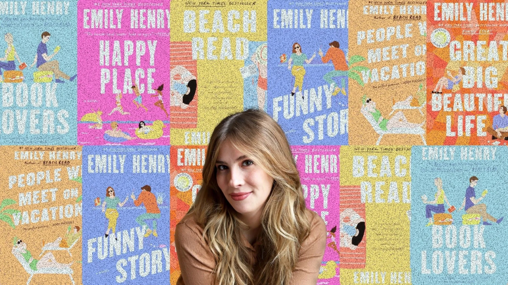
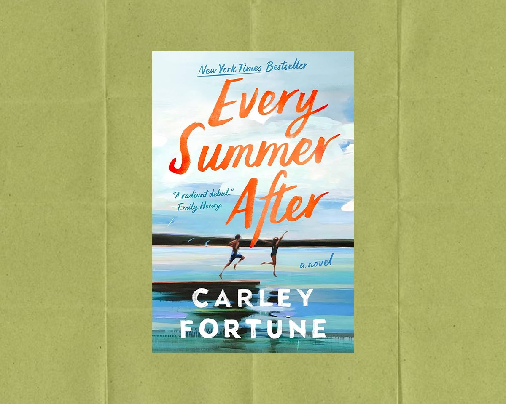
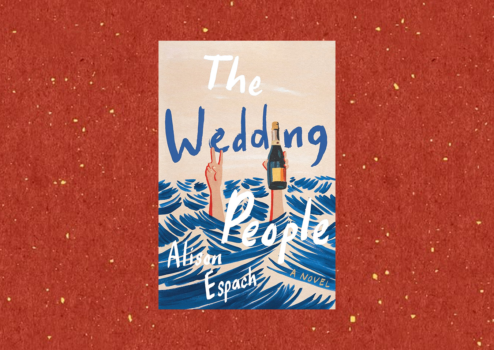
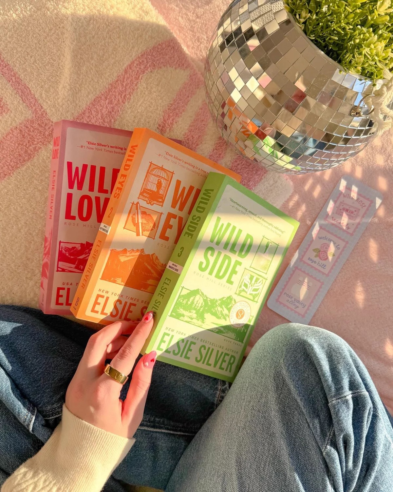
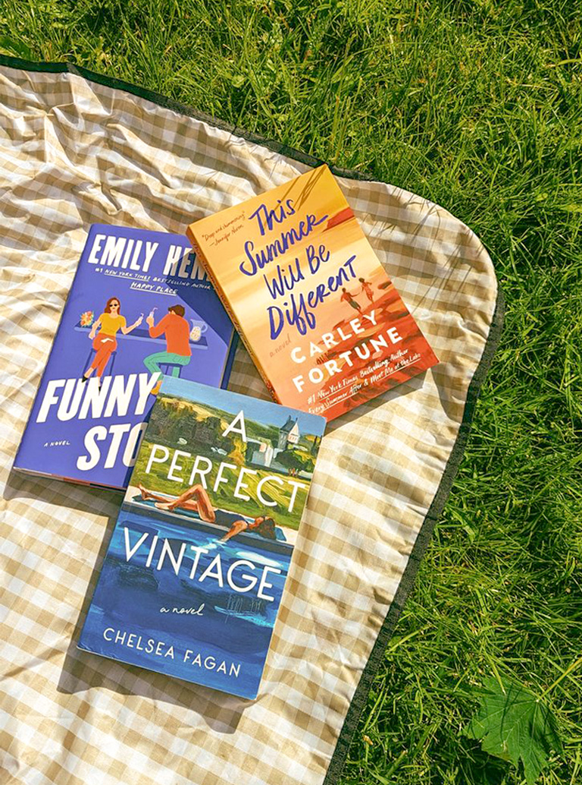

Emily Henry Takeover
Emily Henry is a bestselling author known for witty, emotionally layered contemporary romances that blend sharp humor with heartfelt explorations of love, grief, and personal growth. Her novels, including Beach Read and Book Lovers, often feature complex characters who challenge each other in unexpected ways while discovering what they truly want in life and relationships.

June '26 Pick
The New York Times and #1 Globe and Mail bestseller, with more than 1-million copies sold. Coming to TV as a series with Prime Video. Told over the course of six summers in the past and one weekend in the present, Every Summer After is a gorgeously nostalgic look at love and the people and choices that mark us forever.

May '26 Pick
Alison Espach’s The Wedding People is a nuanced and resonant look at the winding paths we can take to places we never imagined. It has captivated readers with its honest exploration of loneliness, healing, and human connection, making it one of the most talked-about contemporary novels of the year.
Summer Reading Guide
Whether you’re lounging by the pool, heading out on vacation, or simply looking for your next great read, this summer’s hottest, most exciting books offer something for everyone.

Need A New Series?
Elsie Silver’s wildly popular Wild Love series delivers everything romance fans love: small-town charm, emotional tension, swoony single dads, and unforgettable slow-burn chemistry.

Current Fan Favorites
Keep your reading spark alive with these picks! Whether you’re searching for your next obsession or simply want to see what’s trending, these popular picks are guaranteed to keep you turning pages.